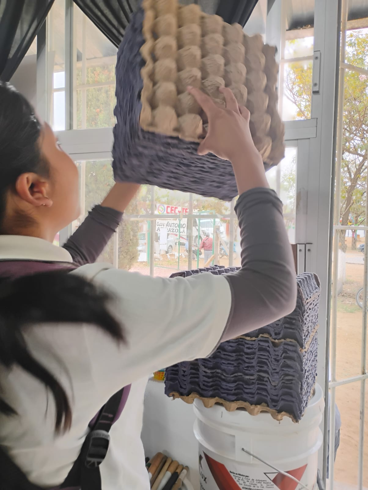
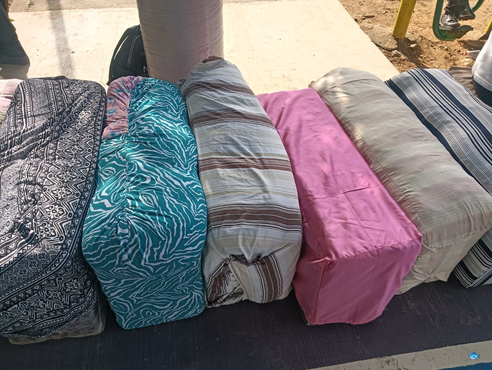
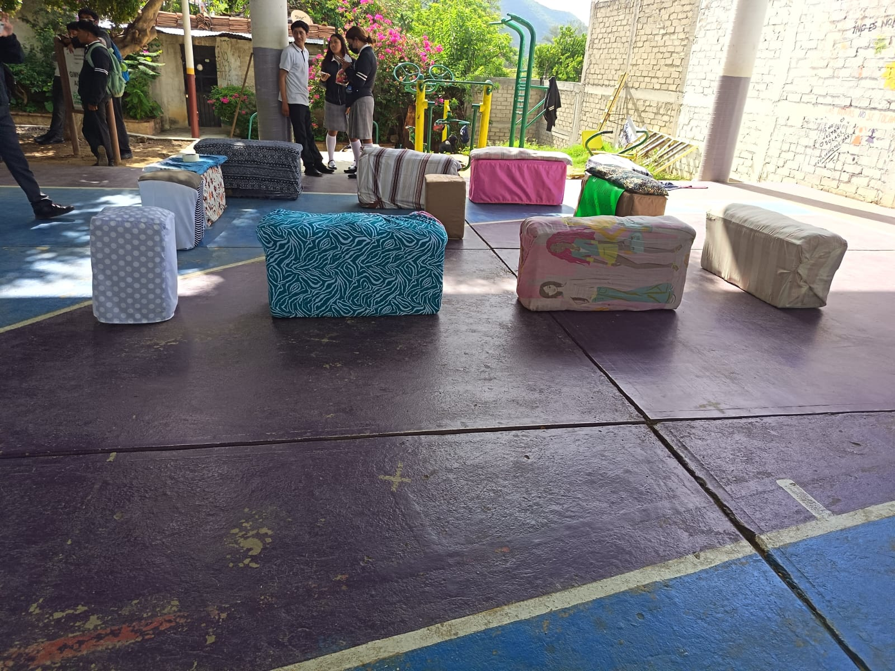

Elaboración de Sillones
Los sillones de este proyecto fueron elaborados utilizando materiales reciclados, como cartoncillos de huevo, los cuales ayudan a dar forma y estructura. Para reforzarlos se utilizó plástico y rafia, y finalmente se forraron con tela para mejorar su apariencia y durabilidad. Se añadieron cojines para hacerlos más cómodos y funcionales.
- Resistentes
- Colores lindos
- Comodos
Acontinuación se muestran algunos de los sillones elaborados


